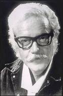

|
|
救主在等候 國語
The Savior is waiting to enter your heart
Ralph Carmichael 1958 |
The Savior is waiting to enter your heart,
Why don't you let Him come in?
There's nothing in this world to keep you apart,
What is your answer to Him?
If you'll take one step toward the Savior, my friend,
You'll find His arms open wide;
Receive Him, and all of your darkness will end,
Within your heart He'll abide.
Refrian
Time after time He has waited before,
And now He is waiting again
To see if you're willing to open the door:
O how He wants to come in.
|
救主耶穌等候要進入你心
為何不讓祂進来
世上没有何事能使你與主分開
你將如何回應祂
朋友你若願意接受主耶稣
祂張開雙臂歡迎你
接受祂你黑暗將成為過去
祂將永住在你心
副歌
日久天長耶稣總在等候
如今祂仍耐心等待
希望你真願意把心門打開
哦祂多願意進來
|
|

https://www.zanmeishige.com/tab/26011.html?songbook=1&index=436 |
|
|
|

The Savior is waiting【救主正在等待】中英歌詞- YouTube
作曲家拉爾夫•卡邁克爾 (Ralph Carmichael) 被認為是當代基督教音樂的先驅和“基督教搖滾之父”。
這首歌《救主在等候》是拉爾夫早期的歌曲之一。它是在他的牧師要求他在傳福音服務中使用一首讚美詩時寫的。
主耶穌正等候進入你心門，
為何你不接受祂？
這世界無法將你與主分開，
你要如何回答祂 ？
哦，朋友，你若願意接近耶穌，
祂會伸慈手歡迎；
脫離黑暗接受祂做你救主，
祂必永住在你心。
副歌
祂耐心的在你心外等待，
現在祂仍然在等待，
等待盼望你願意打開心門，
祂渴望進入你心。
這首聖詩的詞曲都是卡瑪珂（Ralph
Carmichael, 1927 - ）所作。 他出生在美國加利福尼亞州一個喜愛音樂的牧師家庭中，四歲時開始學小提琴，他的家境並不富裕，在那艱難的三十年代，全家縮衣節食地供他學了十三年的小提琴，在大雪紛飛的冬夜，他父親帶著六歲的他佇立街上，希望音樂會的守門者容他們在中場時進去聽半場免費的音樂會。 大學時，他學會了鼓、鋼琴、喇叭、指揮、作曲。 大學畢業後，他組織了一個十四人的管弦樂隊，和十六人的男聲詩班，巡迴演唱。 1949年他首次上巴沙迪那（ Pasadena）電視台，在「基督教校園時間」（The
Campus Christian Hour）參加演唱及演奏器樂，該節目在他策劃下持續了76週，榮獲1951年艾美（Emmy）電視獎。同時他也在洛杉磯城中浸信會任音樂主任，組織管樂團及交響樂隊，指揮二百人詩班獻唱彌賽亞神曲。 翌年他為葛理翰的影片「德州先生」（Mr.
Texas）及其他葛理翰所製的影片撰寫樂譜。 他也為許多基督教的電視節目配樂。

「救主在等候」是卡瑪珂最著名的聖詩。 這首聖詩原是應洛杉磯城中教會的牧師所請而寫的一首「邀請決志」的詩歌。 他其他的作品有：「求告主耶穌」（Reach
Out to Jesus），「救主是我一切」（He’s
Everything to Me）。 卡瑪珂對各種音樂的表達方式能兼容並蓄。他希望能打破典雅聖詩和輕快流行音樂間的鴻溝，這嶄新的觀念，在當時曾被排斥。
五十年代時，卡瑪珂隨世界展望會（World
Vision, International）的創辦人皮爾斯（Bob
Pearce）赴日本為期一個月的巡迴佈道，他集訓了六千人的詩班。 每晚的佈道會，有一千人組成的詩班獻唱，最後邀請決志時，就唱「救主在等候」。在場的美國陪談員將這首詩歌帶回各自教會，廣受歡迎，就此流傳全世界各地。
卡瑪珂是教會、宗教團體和音樂界、影藝界之間的橋樑，他年高德劭，受各界敬重，他樂意推薦有潛力的年輕人；也能喚起成名的音樂家、藝術家來回饋社會。
卡瑪珂說；「基督徒被勸誡，勿以自我為中心，如果我們肯衷心接受基督的信息，我們就有責任去幫助那些有需要的人。」
作者：郭惟恩
耶和華必然等候，要施恩給你們。-以賽亞書30章18節
經文默想：
以賽亞書 30:15-21
15 主耶和華以色列的聖者曾如此說：「你們得救在乎歸回安息，你們得力在乎平靜安穩。」你們竟自不肯！ 16
你們卻說：「不然，我們要騎馬奔走。」所以你們必然奔走。又說：「我們要騎飛快的牲口。」所以追趕你們的也必飛快。 17
一人叱喝必令千人逃跑，五人叱喝你們都必逃跑，以致剩下的好像山頂的旗杆，岡上的大旗。
18 耶和華必然等候，要施恩給你們，必然興起，好憐憫你們，因為耶和華是公平的神。凡等候他的，都是有福的！
19 百姓必在錫安在耶路撒冷居住，你不要哭泣，主必因你哀求的聲音施恩給你，他聽見的時候，就必應允你。
20 主雖以艱難給你當餅，以困苦給你當水，你的教師卻不再隱藏，你眼必看見你的教師。
21 你或向左，或向右，你必聽見後邊有聲音說：這是正路，要行在其間。
美國詩人丹妮絲•列維托夫（Denise Levertov）在12歲尚未成名之前，就勇敢地將自己習作的詩集寄給偉大的詩人艾略特（T. S.
Eliot），然後等待對方指正。令列維托夫驚喜的是，艾略特親手寫了兩頁的信鼓勵她。列維托夫成名之後，在詩集《溪流和藍寶石》的自序中談到，這些詩記錄了她從懷疑變成信靠基督的過程。後來，列維托夫更在她的另一首詩（Annunciation），敘述了馬利亞如何順服上帝。聖靈並未強迫馬利亞，而是等她甘心樂意地接受基督成為她的孩子。這首詩當中有一句話：「上帝等候。」
從馬利亞身上，列維托夫看到了自己。上帝等候，渴望愛她；上帝等候，不用任何方式強迫她。以賽亞也詳細論述，上帝帶著盼望等候以色列人，要以溫柔的愛澆灌他們。正如以賽亞說：「耶和華必然等候，要施恩給你們；⋯⋯好憐憫你們」（30章18節）。上帝要以慈愛澆灌祂的子民，然而上帝等候他們心甘情願地接受祂的供應（19節）。
這位造物主、全人類的救主正等候我們向祂敞開心門。這是何等奇妙！上帝原可以輕而易舉地讓我們點頭，但祂卻謙和地耐心等候。這位上帝正在等候我們！
回應詩歌：
The Savior is waiting

This hymn was written by Ralph Carmichael in the mid-1950s.
Ralph Carmichael
Ralph Carmichael
Mr. Carmichael shares that his pastor, Lester Harnish, requested he write a
new hymn to be used as an invitation each night for the upcoming revival. This
revival was scheduled to last for two weeks and would be sung at the end of the
sermon.
At the beginning of the revival a ladies trio would step forward to sing the
hymn. By the end of the revival the words were printed in the church bulletin
for the congregation to sing.
Dr. Bob Pierce, of World Vision, had attended a meeting and called him one
day. World Vision was planning a month long revival in Japan and asked Mr.
Carmichael if he would serve as music director. He requested that The Savior is
Waiting be used each night as the invitational hymn.
Numerous ministers attended these revival meetings and requested permission
to take a copy of the hymn back to their home churches. Soon request came
flooding in to include the song in numerous hymnals.
This song is an example of how God can take something that is meant for
intimate use and give it a worldwide impact.
http://dianaleaghmatthews.com/the-savior-is-waiting/#.YgpWZP5BzIU
The Story
The composer, Ralph Carmichael (1927 – ), is the son of a Pentecostal
minister who allowed his son to play the violin and listen to the radio. As a
teenager, he played violin with the San Jose Civic Symphony. At 17 he enrolled
at Southern California Bible College, now Vanguard University, to become a
preacher like his father, grandfather, 3 uncles and 5 cousins.
He started a campus men’s quartet, ensembles and mixed groups of all kinds,
blending jazz and classical music techniques with gospel songs and hymns. His
musical “experiments” proved instantly controversial. His bands were unwelcome
at many churches, and he was not allowed to store the baritone saxophone on
campus because of its worldly associations with big band music.
After college, reaction to his band was mixed from the Christian community.
One church made them hide the drums behind a curtain; a pastor in Oakland
stopped the band mid-song because the music sounded too worldly. But, after a
performance at a men’s fellowship in Pasadena, Ralph’s band was invited to
audition for television. This program drew so much hate mail from Christians
that the station asked for more shows!
In 1951, Ralph was invited to score a film for the Billy Graham Evangelistic
Association; in all, he wrote the musical score for 20 of their films. For BGEA,
he made the funky urban soundtrack for the 1970 film The Cross and the
Switchblade.
By the late 1950s, secular producers had taken notice of Carmichael’s radio
and film work. He was invited to assist the composer at the television sitcom I
Love Lucy and was soon arranging music for that show as well as Bonanza and The
Roy Rogers and Dale Evans Show and for singers Nat King Cole, Bing Crosby, and
Rosemary Clooney. He scored the movie The Blob. But, when he arranged and
composed music for a Bing Crosby Christmas special television program, his
denomination strongly suggested he not apply for renewal of his ordination.
When it came to writing his autobiography, he decided the best title would be
his testimony, so he called it, “He’s Everthing To Me”. He is considered a
pioneer of contemporary Christian music and the “father of Christian rock”.
This song, “The Savior Is Waiting”, is one of Ralph’s earlier songs. It was
written when his pastor asked him for a hymn to be used at evangelistic
services.
My oldest and favorite memory of this hymn was it being sung during the
invitation… almost every night… at Camp Formosa Church Camp when I was a
teenager. When this hymn is sung, you can almost picture the Savior waiting for
you to come to Him.
https://hymnary.org/person/Carmichael_R

卡瑪珂（Ralph Carmichael, 1927 -
）所作。
他出生在美國加利福尼亞州一個喜愛音樂的牧師家庭中
1949年他首次登巴沙迪那（Pasadena）電視台，在「基督教校園時間」（The
Campus Christian Hour）參加演唱及演奏器樂，該節目在他策劃下持續76週，榮獲1951年艾美（Emmy）電視獎。同時他也在洛杉磯城中浸信會任音樂主任，組織管樂團及交響樂隊，指揮二百人詩班獻唱彌賽亞神曲。翌年，他為葛理翰的影片「德州先生」（Mr.
Texas）及其他葛理翰所製的影片撰寫樂譜。他也為許多基督教的電視節目配樂。卡瑪珂是教會、宗教團體和音樂界、影藝界之間的橋樑，他年高德劭，受各界敬重，大家稱他「聖樂先生」。
Texts by Ralph Carmichael (13)
Ralph Carmichael (2)
http://worship-songs-resources.worshiptogether.com/search?w=Carmichael%2C%20Ralph%2C
Ralph Carmichael (born 28 May 1927,
Quincy, Illinois) is a composer and arranger of both secular pop music and
contemporary Christian music, being regarded as one of the pioneers of the
latter genre.
https://hymnary.org/tune/carmichael_carmichael
「救主在等候」（The Savior Is Waiting）是卡瑪珂最著名的聖詩。
這首聖詩原是應洛杉磯城中教會的牧師所請而寫的一首「邀請決志」的詩歌。五十年代時，卡瑪珂隨世界展望會（World
Vision, International）的創辦人皮爾斯（Bob
Pearce）赴日本為期一個月的巡迴佈道，他集訓了六千人的詩班。每晚佈道會時，有一千人組成的詩班獻唱，最後邀請決志時就唱「救主在等候」(
The Savior Is Waiting），在場的美國陪談員將這首詩歌帶回各自教會，廣受歡迎，就此流傳全世界各地。
他其他的作品有：「救主是我一切」（He’s Everything to Me），「愛是順服」（Love
Is Surrender）等。
卡瑪珂是教會、宗教團體和音樂界、影藝界之間的橋樑，他年高德劭，受各界敬重，大家稱他「聖樂先生」。
他樂意提挈有潛力的年輕人；也能喚起成名的音樂家、藝術家來回饋社會。
卡瑪珂說；「基督徒被勸誡，勿以自我為中心，如果我們肯衷心接受基督的信息，我們就有責任去幫助那些有需要的人。」